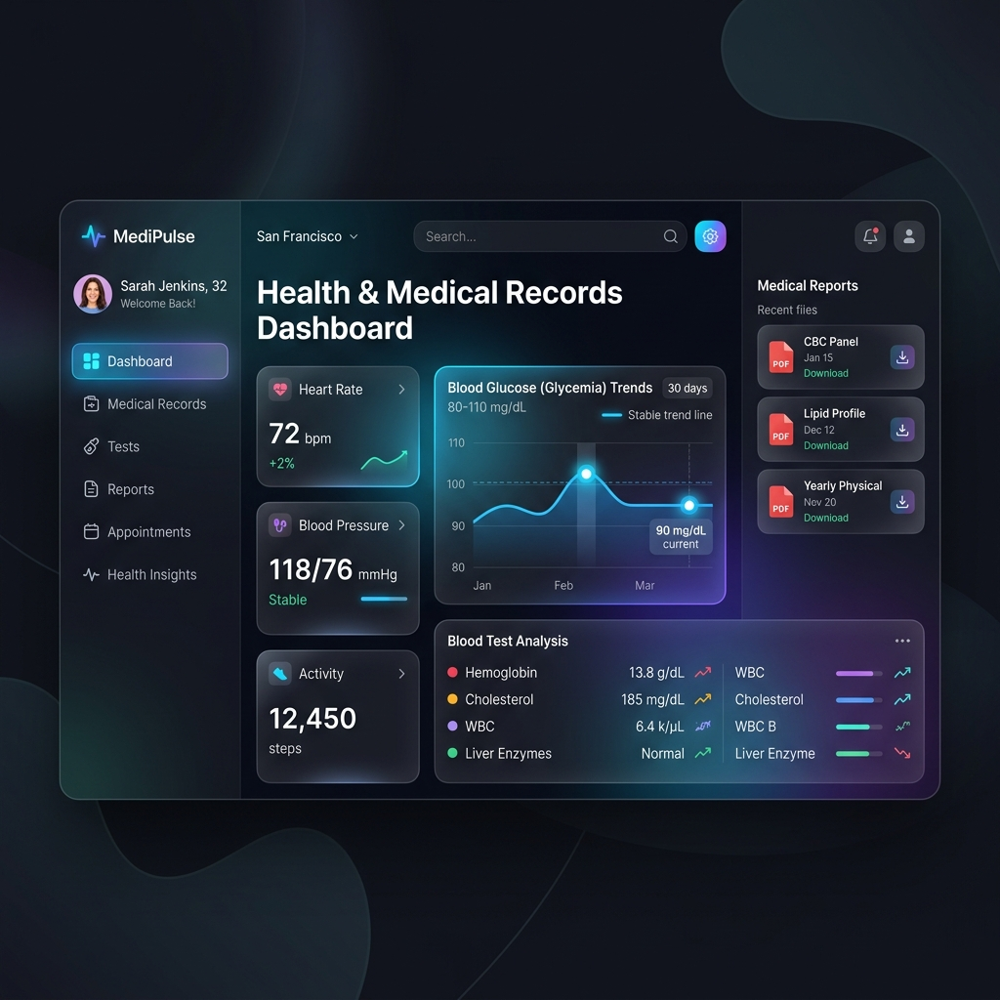

Centralize exames, receitas e vacinas em um só lugar. Nossa Inteligência Artificial tira suas dúvidas e analisa seu histórico médico em segundos.
O Health Sync oferece ferramentas completas para você ter controle total sobre a sua saúde e da sua família.
Todos os seus exames, laudos e receitas médicas organizados cronologicamente e acessíveis de qualquer lugar.
Nossa IA treinada em dados médicos ajuda a interpretar exames complexos e responde suas dúvidas de forma simples.
Seus dados são criptografados de ponta a ponta. Apenas você e os médicos que você autorizar possuem acesso.
Mantenha a carteirinha de vacinação atualizada digitalmente e receba alertas para as próximas doses.
Um processo simples, rápido e transparente para transformar a maneira como você cuida da sua saúde.
Cadastre-se gratuitamente em menos de 2 minutos.
Faça upload de PDFs, imagens de exames ou conecte com laboratórios parceiros.
Faça perguntas, gere resumos para seu médico e acompanhe sua evolução.
